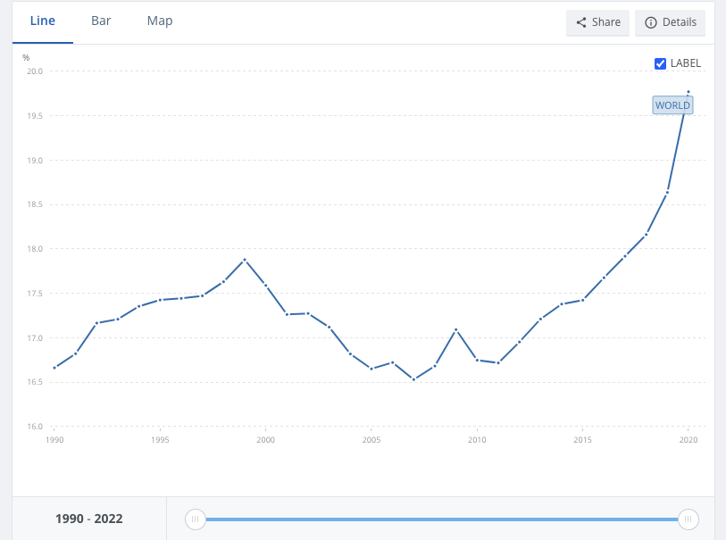

Author: Leonardo Mario di Gennaro
Date: January 2025
This visualization portfolio was developed for the Data Analytics for Finance II exam at Università della Svizzera Italiana (USI). The project adheres to the guidelines provided by the professor and focuses on the critical topic of climate change.
Python has been selected as the primary programming language due to its simplicity and extensive support for external libraries. In particular, Plotly was utilized for its robust and comprehensive capabilities in data visualization. A comprehensive list of useful resources can be found in the Appendix.
See full code here: GitHub Repository
See portfolio website here: Portfolio Website
Figure 1 is a line chart displaying the average annual global temperature in Fahrenheit from 1880 to 2015. The graph contains several critical flaws. Firstly, the y-axis scale is misleading, ranging from 0 to 110°F, which is entirely inappropriate for this data. This exaggerated scale minimizes the apparent impact of global warming. Additionally, the temperature line is very thin and blends into the background, making it difficult to interpret the data. Possible improvements include:
Word Count: 113.
Figure 2 represents a personal revision of the figure shown in the previous section. Significant improvements have been made to enhance clarity and accurately convey the data. The y-axis now uses an appropriate scale for temperature anomalies, effectively highlighting subtle but impactful changes over time. Additionally, a horizontal line at y = 0 has been added to provide a clear visual reference point, immediately illustrating deviations from the historical average. The temperature anomaly line is now bolder and more distinct, improving visibility and making trends easier to interpret. Overall, these changes offer a more accurate and impactful representation of global temperature changes from 1880 to 2015.
This visualization from Our World in Data effectively illustrates the relationship between CO₂ emissions per capita and GDP per capita across various countries in 2022. The positive correlation between economic wealth and consumption-based CO₂ emissions is clearly presented, supporting the economic rationale that higher wealth often leads to greater energy consumption and, consequently, higher emissions. A notable strength of this chart is the use of bubble sizes to represent population, offering a multi-dimensional perspective. This allows viewers to not only assess how wealthy a country is and how much CO₂ it emits but also how its population size influences its overall environmental impact. Additionally, the effective color-coding by continent helps differentiate regional trends, making it easier to compare countries with their peers. To further enhance this insightful visualization, highlighting outliers could provide deeper insights into countries that significantly diverge from the general trend, revealing unique economic or environmental strategies. World Count 150.
In light of the recent LA wildfires, I felt compelled to dive into climate change data. After spending hours sifting through massive datasets and creating countless drafts of complex graphs, I realized that simplicity often speaks the loudest. I decided to focus on one critical metric: global surface temperature change. This measure is widely recognized in academic research as a powerful indicator that encapsulates the core concerns of climate change. The graph below tells a clear story. No complex models, no noise—just the raw truth. Draw your own conclusions. Sometimes, the simplest view is the most impactful. #ClimateChange #GlobalWarming #DataVisualization #Sustainability #ClimateAction
The simplest visualizations are often the most impactful due to their clarity and ease of understanding. The balance between simplicity and information is crucial. However, introducing a certain level of complexity is necessary to explore and interpret more intricate phenomena. The following map chart utilizes the same dataset from Exercise 4/5, providing a dynamic view of global temperature changes over time. The use of a darker color scale for regions with higher temperature increases enhances the visualization’s ability to highlight critical climate trends.
The following graph aims to maximize Tufte’s "data-ink ratio". by reducing non-essential visual elements and focusing purely on the data. It displays global renewable energy consumption from 1990 onwards using a minimalist bar chart, where the most recent data point (2020) is highlighted in red to emphasize growth. The second graph, sourced from the World Bank, presents the same data but in a line chart format with a more compressed y-axis scale. This compression subtly manipulates the visual perception of growth, making the increase in renewable energy consumption appear more dramatic than in the first graph. While the underlying data remains unchanged, the presentation alters how viewers interpret the rate of progress. This is another example of bad visualization as presented in Exercise 1. 
The following graph visualizes the distribution of willingness to donate 1% of income to combat climate change across different global regions. It utilizes a violin plot to effectively display both the distribution and density of responses, highlighting regional differences in environmental commitment. Regions like Africa and South America show higher median willingness and tighter distributions, indicating stronger and more consistent support for climate action. In contrast, Oceania displays the lowest median willingness, with a narrower spread, suggesting less variation but overall lower support. Asia and Europe exhibit wider distributions, reflecting greater variability in responses.
The following graph has been drawn by hand. It displays the share of renewable energy consumed by Switzerland from 2009 to 2021.

The attached photos shows the whole process behihd the creation of Figure 8. ChatGPT-4 has been choose as main LLM.


The following data map illustrates global PM2.5 air pollution levels in residential areas by country for the year 2019, measured in micrograms per cubic meter (μg/m³). Using a Yellow to Red color scale to represent increasing pollution intensity.
This point of the guidlines requested to create one interactive visualization and deploy it on a public accesible URL. Since plotly provide an easy access to interactive visualization, I decided to host all my graphs on a github page. Check the portfolio website HERE
Attached you can find the prototypes and sketches of the graphs in point 14.


Optional charts follows.
For data visualization, my favorite tool is Plotly due to its ability to create interactive and visually appealing graphs with ease. Its integration with Python allows for dynamic and customizable visualizations, making it ideal for complex data projects. Additionally, hosting interactive visualizations on GitHub Pages provides an accessible platform for sharing work publicly. I also rely on Our World in Data and World Bank datasets for credible and comprehensive data sources. For design inspiration and best practices, I reference Edward Tufte’s principles on data-ink ratio to emphasize clarity and simplicity. Kaggle is another valuable platform for exploring diverse datasets and gaining insights from the data science community. These tools and resources collectively support effective storytelling through data.
For further reading and insights on climate and energy data visualization, explore the following resources:
This project was developed with the assistance of ChatGPT-4.0, an AI language model created by OpenAI. AI tools were used for:
All AI-generated content has been thoroughly reviewed and verified for accuracy and relevance.
Figure 1:
National Review (Deleted Tweet). Retrieved from the Internet Archive:
https://web.archive.org/web/20160121070318/https://twitter.com/NRO/status/676516015078039556
Figure 2:
Energy Institute. Statistical Review of World Energy (2024). Major processing by Our World in Data.
Dataset: energy-consumption-by-source-and-country.csv.
Figure 3:
NASA GISS Surface Temperature Analysis (GISTEMP).
https://data.giss.nasa.gov/gistemp/
Figures 4, 5, and 6:
International Monetary Fund (IMF).
Climate Data Portal.
Figure 7:
World Bank.
Renewable Energy Consumption (% of Total Final Energy Consumption).
Figure 8:
Our World in Data.
Willingness to Give 1% of Income to Combat Climate Change by Region.
Figure 9:
Kaggle.
Renewable Energy Worldwide (1965–2022).
Figure 11:
Our World in Data.
Exposure to Particulate Matter Air Pollution.
Figure 14:
Our World in Data.
Energy Consumption by Source and Country.